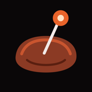
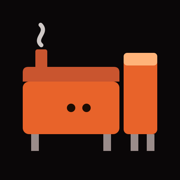
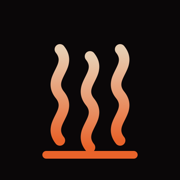

The Pit: icon candidates, as iOS rounds them, at two sizes

A, the probe in the meat
the whole app in one picture

B, your gravity smoker
hopper tower and all
C, the fire over the grate
the classic

D, smoke off the coals
the softest